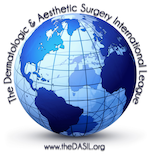

News and Download Center
WHAT IS BIOCELLULAR MEDICINE?
November 18th, 2016
The term, biocellular, refers to the combination of important biological chemicals (such as growth factors, signal proteins, and chemicals important to wound healing) with undesignated cells (often referred to as adult stem/stromal cells) found widely spread within the body and which participate in tissue maintenance, repair, and regeneration. Science and medicine have recently entered a translational phase, where proved laboratory science has demonstrated important contributions join the clinical application of the science in human applications in the past decade. There has been controversy concerning the use of the term, stem cells, in current practice of medicine. Unfortunately, these arguments typically occur with the use of stem cell interpreted as uses of pure embryonic or fetal stem cells, implying destruction of embryo or fetal tissues. In the past decade, the recognition of the safety and efficacy of using a person’s own (autologous) adult stem/stromal cells has advanced to the point that it is widely documented and published.
In this week's newsletter, we would like to share a latest paper published by our Master Class Faculty Dr Robert Alexander on the topic of Use of Adipose-Derived Stem/Stromal Cells and Its Native Bioactive Matrix which was just published in Biocellular Regenerative Medicine in 2016.
The key points covered in this paper are:
- Autologous Stem/Stromal Cells and Platelet Concentrates Guided to Targets.
- Combination of Cells & PRP concentrates work better than either alone.
- Biocellular Combination Is Believed To Facilitate Patient’s Own Wound Healing/Regeneration.
- How did Biologic and Cellular Therapeutic Concepts evolve?
- What is the future in Stem/Stromal Cellular and Biocellular Treatments?
- A Recent Advance in use of Biocellular uses: nanofat (Emulsified Adipose Derived-tissue stromal vascular fraction)
Read the full paper on Biocellular Regenerative Medicine: Use of Adipose-Derived Stem/Stromal Cells and Its Native Bioactive Matrix.
About Dr Robert Alexander
Just voted one of the TOP 10 innovators in the field of stem cell innovation field by the international Academy of Regenerative Practices at their recent conference, Dr. Robert W. Alexander, MD, DMD, FICS is an internationally recognized aesthetic & reconstructive surgeon, author, teacher, pioneer in use of stem/stromal cells in clinical practice, and a recognized leader in the field of biocellular regenerative medicine. Contributions in use of adipose-derived stem/stromal cells combined with high-density platelet concentrates in the areas of aesthetic surgery, open flap surgery, chronic wound therapy, and orthopaedic medicine/surgical fields is considered novel and important worldwide.
Official Endorser: Dermatological Aesthetic Surgery International League
Event Partner: International Fellowship in Advanced Aesthetic Science